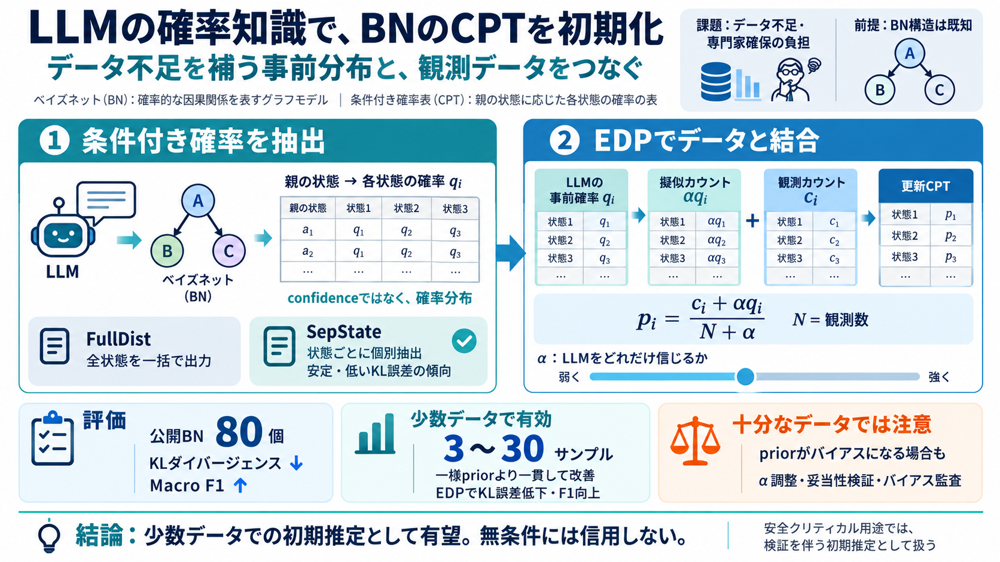

Extracting Probabilistic Knowledge from Large Language Models for Bayesian Network Parameterization
We introduce two distinct frameworks for estimating the parameters of a BN. Our first approach, Extracting Probabilistic…

We introduce two distinct frameworks for estimating the parameters of a BN. Our first approach, Extracting Probabilistic…
Selection of Appropriate Statistical Methods for Data Analysis. Annals of Cardiac Anaesthesia, 22(3):297. 3410 Aliakbar …
Sep 15, 2026 — These findings confirm that using LLM predictions as expert-driven priors improves the performance and ro…
| | | | | | | | | --- --- --- --- | | Model 1: Manual Priors | | | | | | | | | Parameter | mean | mode | sd …
Aug 10, 2025 — In this work, we demonstrate that modern LLMs can effectively produce conditional probabilities to be use…